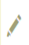
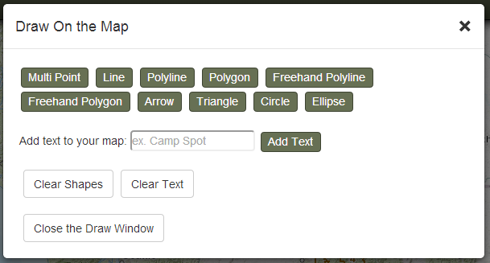
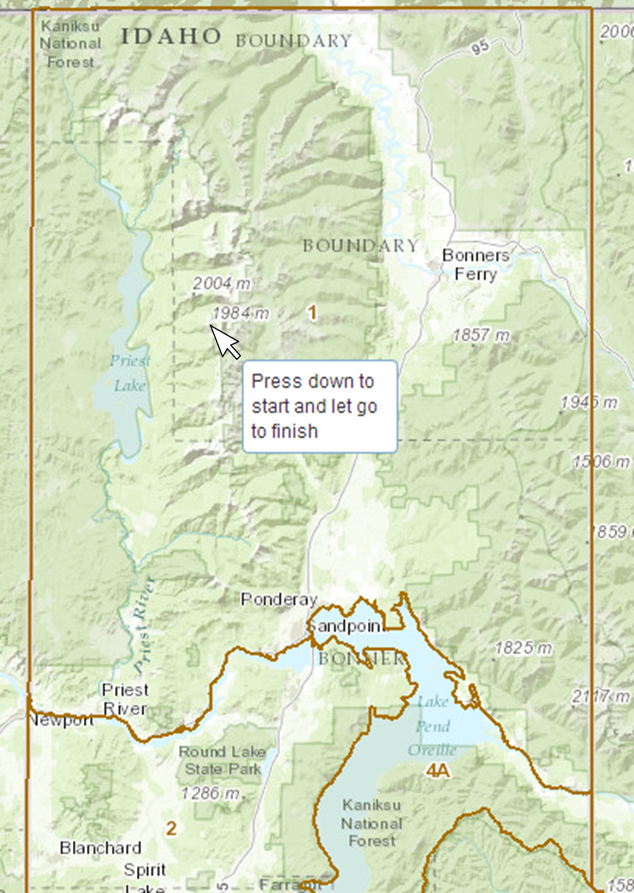
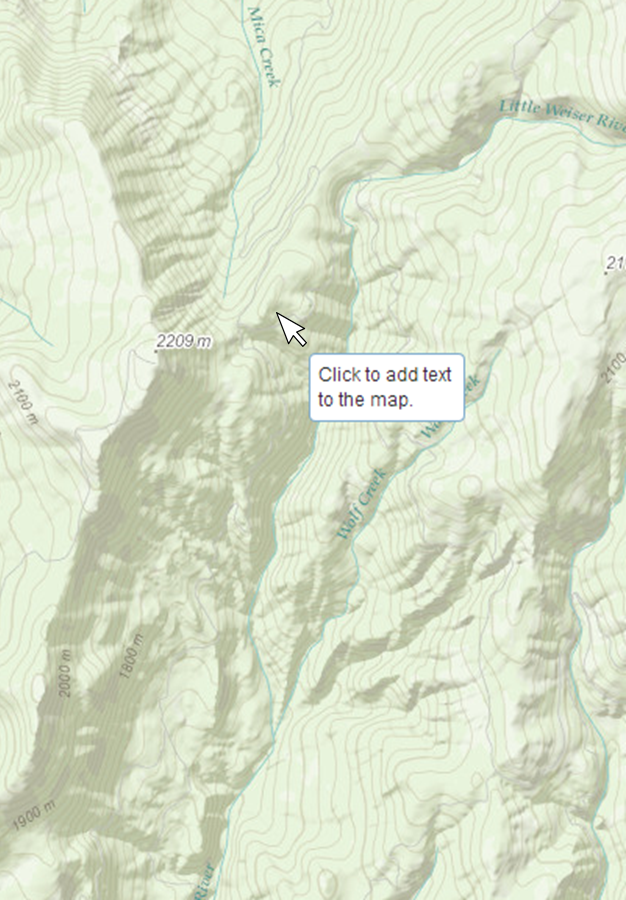
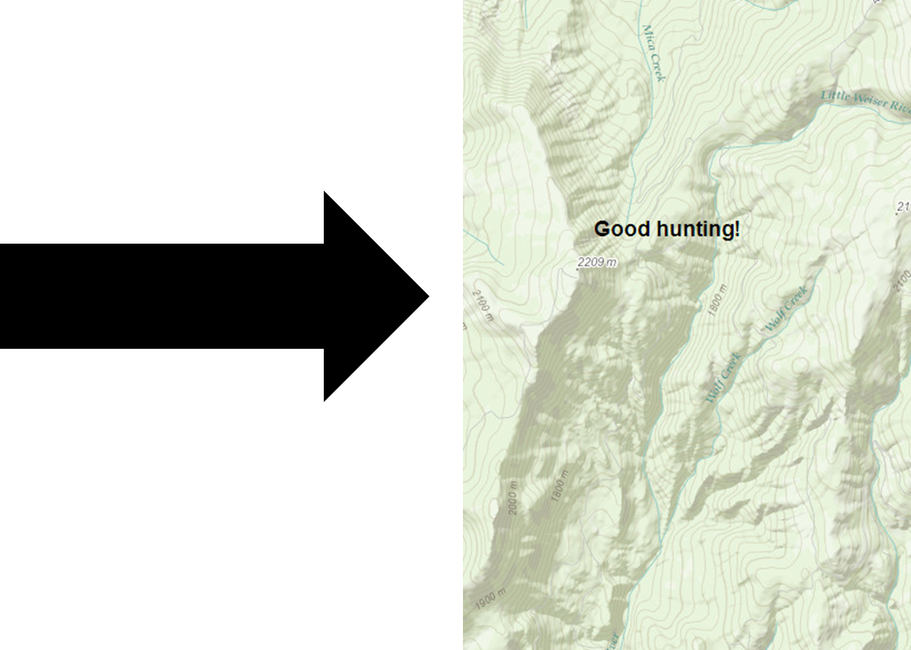

DRAW ON THE MAP
The draw tools allow you to add different shapes and labels to your map. They could be handy for highlighting an area of interest or labeling a specific location.

When you select a draw tool, a tooltip will guide you through its usage. For example,

To add a label, type the label text in the textbox after 'Add text to your map:' and click the 'Add Text' button. The Draw tool window will close. Just click a location on the map where you would like the label to appear. The label will be centered on the location you click.
 
To clear the shapes or labels you added, click the 'Clear Shapes' or 'Clear Text' buttons in the Draw window.
Created with the Personal Edition of HelpNDoc: Easily create Help documents